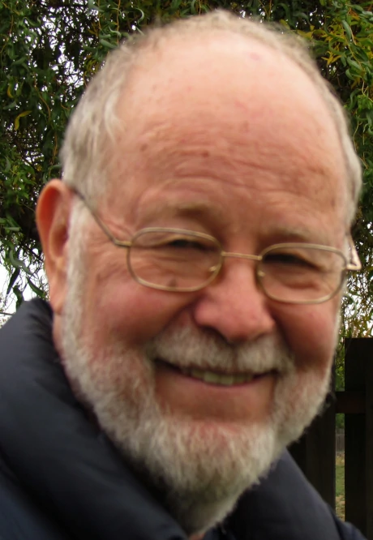

Hi, I’m Bill Polm.
I’ve been painting, drawing, and studying watercolors for well over 30 years.
I’m basically self-taught, although I have taken a number of watercolor workshops from other artist/teachers in various places: California (several), Colorado, Maine. I studied with these Artists: Ken Decker, Robert Landry, Kolan Peterson, Tony Couch, Stephen Quiller, Richard Scott, and Timothy J. Clark. My goal with this blog is to include some of the best available advice on watercolor painting.
A lot of what I will share I have learned from other artists (and I will endeavor to give proper credit!) and some is of my own invention–usually out of necessity or after making mistakes! In other words, in the process of learning.
I’ve been painting, drawing, and studying watercolors for well over 30 years.
I’m basically self-taught, although I have taken a number of watercolor workshops from other artist/teachers in various places: California (several), Colorado, Maine. I studied with these Artists: Ken Decker, Robert Landry, Kolan Peterson, Tony Couch, Stephen Quiller, Richard Scott, and Timothy J. Clark. My goal with this blog is to include some of the best available advice on watercolor painting.
A lot of what I will share I have learned from other artists (and I will endeavor to give proper credit!) and some is of my own invention–usually out of necessity or after making mistakes! In other words, in the process of learning.